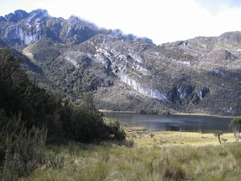

Navigation
- Carstensz Pyramid
- PROGRAMS & SCHEDULE
- Our most imporant expeditions
- LAST CARSTENSZ REFERENCIES
- History of climbing the summit
- Legendary Carstensz climbers
- Seven Summits
- 7 Summits - History
- 7 faces of Carstensz Pyramid
- Photos from climbing
- The nature and flora
Trekking around Carstensz
- Climbing routes to the summit
- 7summits Carstensz best Base camp
- The Tribes and People
- Climate and weather
- Climbing permits
- How to go
- The Highest Mountain of Papua New Guinea
- Why to go with us
- Malaria
- Wrote about us
- References
- Links
- Contact us
- Download


Trekking around Carstensz Pyramid (Puncak Jaya)
Trekking in the Carstensz Pyramid surroundings, is some of the most beautiful in the whole world. To say the truth, we don't know of a more beautiful place. There are tropical forests, snow covered summits, endless forests of gigantic ferns, jagged walls, alpine massive, pure rivers, sky-blue lakes, and lovely white glaciers. I do not know another place on the Earth, where you can see all this during one single week!
Gigantic ferns and Kembalo Plato
.JPG)
Gigantic ferns on Kembalo plato Photo©JahodaPetr.com
The several day long trekking from the airport to the Base Camp, begins at the height of about 2000 m (6560 ft) in a mountainous rain forest. We wade through rivers, mud, rain, and climb over slippery logs. This makes the trip more than adventurous, and causes us to think about the trip Heinrich Harrer made long time ago. As soon as we reach the edge of the rain forest at the Kembalo Plató (3500 m, 11500 ft), we are rewarded by a terrific view of a prehistoric world. The creators of Jurassic Park couldn't have chosen better setting. Fern trees reach up to 2–4 m (7 – 13 ft), and put finishing touches to „small“, approximately 5–10 meters high (17 – 33 ft), stone formations. You can almost expect a dinosaur to peer out from somewhere?
The lake scenery

Larsons Lake Photo©JahodaPetr.com
At this point we are around 3500 m (11500 ft) above the sea level. We have spent several days walking through a beautiful forest of ferns and are approaching the area of upland swamps. Unfortunately, words can't capture the wonderful atmosphere, the green grass, the moors, the proximity of high mountains, and the unbelievably pure water. A night spent in a tent under a stone overhang, accompanied by the sounds of cracking burning wood, and the songs of the porters from the Damal tribe, put final touches and leverage to the fairy tale atmosphere of the lost world.
The Snow Mountains and the New Zealand Pass
.JPG)
Famous wuivs in wilde mountains Photo©JahodaPetr.com
When Kembalo Plato comes to an end, there is a barrier of Snow Mountains towering in front of us. There are shining glaciers on the summits of high mountains, and who does not know the way cannot pass. There are only the following synonyms on our minds: Patagony, Cerro Torre, gigantic Dolomites! The walls of the continual massive have definitely blocked our way to the Carstensz Pyramid. The fantastic feeling from gazing at such beauty, is quickly replaced by doubts. Will we find the New Zealand pass? Which of the possible passes is it? Which will lead us to the Merental valley?
New Zealand Pass is a crucial point, not only for us, but also for our porters. It is the only way across the Snow Mountains to the Merental valley.
The pass is situated some 4500 m (14764 ft) above sea level. If it snows the terrain might freeze, which would pose considerable problems, especially for the porters. They want to be in the pass in the morning as early as possible.
.JPG)
New Zeland Pass was named after 1936 expedition- there are 15 porters on the picture Photo©JahodaPetr.com
We hope we won't share the fate of the New Zealand expedition lead by Collin Putt. They tried to find the pass but failed, and were forced to return. The pass now bears their name – New Zealand Pass.
I am not surprised that the New Zealanders did not find the pass. Before we arrived to it, we had to overcome the lower passes. We already see my comrades, and realize we are a bit late. The group is couple hundreds meters ahead of us (over 1000 feet). There about fifteen porters on the „road“ to the pass. It is so huge, and the rocks around it so high, that one can hardly see them, and we only perceive them as vague dots. We would only be able to see them on a magnified photo, so huge is the Papua and New Zealand Pass.
Carstensz Pyramid (Puncak Jaya) and the Descent to the Lake Valley
Having for the first time overcome the New Zealand Pass 4500 m (14764 ft) we descend to the Base Camp situated in the Lake Valley – height 3800 m (12467 ft). We brush past the mountains, pass the crossing to Temgabapura, and delve into the descent. The first part is almost vertical but safe. Our carriers know the way where it is not necessary for climbers to secure. And then it is there before us.
.JPG)
Near to New Zeland Pas – First view of Carstensz Pyramid wall – Face to face, not far, not near, but famous Photo©JahodaPetr.com
"When I saw it for the first time, I remember having mixed feelings. It stood there majestic, its upper part hidden in clouds, and the bottom was partly covered by an ending of large mountainous crevasse which we used during our descent to Base Camp. We were separated by the Lake Valley, but it was so close and so enormous it could cover up the whole horizon. For the first time in my life I saw the wall of the Carstensz Pyramid with my own eyes.
The first feeling that I realized was respect – a substantial respect for this unknown but splendid wall. I could clearly feel that it was not fear but „only“ respect. The second more powerful feeling, which I realized in quick succession, was challenge. The wall provoked me. Since the first instant I knew that I had to go to the wall. You know the feeling. Your heart starts beating and you act irrationally. You quicken your pace, although you know that you are too far to grasp it with your own hand. Despite that you want to go as quickly as possible to meet it." (Petr Jahoda – Papua & Crstensz Pyramid guide)